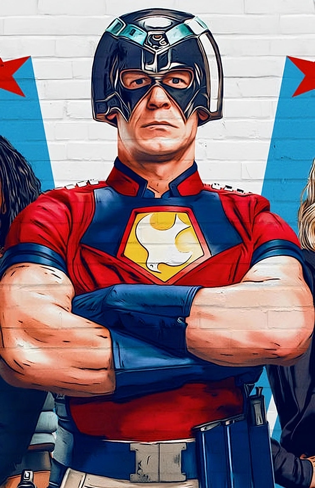
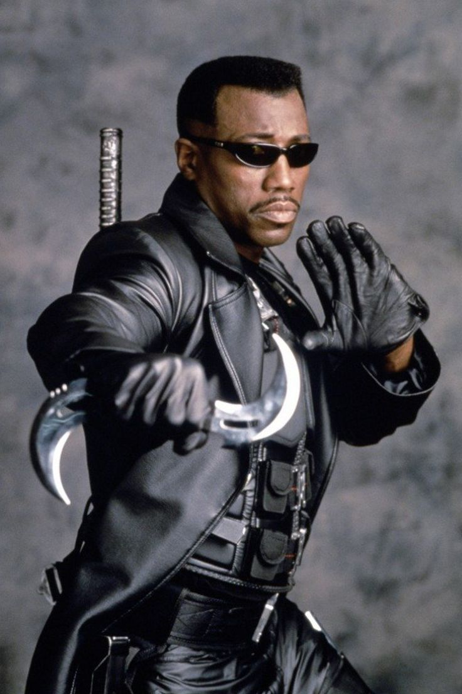

Peacemaker
Peacemaker, is a complex and intriguing character from DC Comics, most notably portrayed by John Cena in The Suicide Squad (2021) and the Peacemaker TV series.
He is a heavily armed anti-hero who believes in achieving peace at any cost of ironically including the use of extreme violence. Despite his brutal methods and awkward social interactions,
Peacemaker is a deeply layered character who struggles with his past, his morality, and his desire to do what’s right, even when his actions suggest otherwise. His journey of self-reflection,
especially in the TV series, reveals a man tr ying to escape the trauma of his upbringing and redefine what peace really means. I’d love to have Peacemaker over because, beneath the armor and bravado,
he's someone who craves connection and understanding. His mix of blunt honesty, oddball humor, and unexpected vulnerability would make for an entertaining and thought-provoking guest. Plus, the conversations would never be dull and he’d probably say something outrageous one minute, then ask a surprisingly deep question the next. Sharing a meal with him would be like watching a live-action character study unfold right in your living room.
Homelander
I would absolutely *not* want Homelander from *The Boys* anywhere near my home. While on the surface he presents himself as the quintessential hero charming, patriotic, and powerful beneath
under that polished image lies a deeply unstable, egotistical, and violent individual. His complete lack of empathy, tendency toward manipulation, and explosive temper make him not just untrustworthy,
but outright dangerous. Inviting Homelander over would be like playing Russian roulette with a nuclear warhead with one wrong look, one misplaced comment, and it could all go sideways. There's no honor in hosting someone who sees human lives as expendable and uses his power to instill fear rather than protect.
Blade
I would absolutely want Blade over, not just because he’s a half-vampire, day-walking badass, but because beneath his stoic exterior lies a fierce sense of justice and loyalty.
Blade has spent his entire life hunting the very creatures that made him what he is, choosing to fight for humanity instead of giving in to his darker instincts. Having him over would be an opportunity to hear firsthand
what it’s like to walk the line between monster and man, and to learn from someone who’s mastered discipline, combat, and survival against impossible odds. He’s not the talkative type, but I imagine a quiet evening with Blade
would be filled with sharp insights, intense presence, and maybe even some mutual respect — just don’t offer him garlic bread.
Menu
Appetizers
- Nachos
- Bread sticks
- Baloney
Main Course
- Steak
- Turkey Burger
- Burrito
Dessert
- Chocolate Fudge
- Banana Pudding
- Ice Cream Sunday